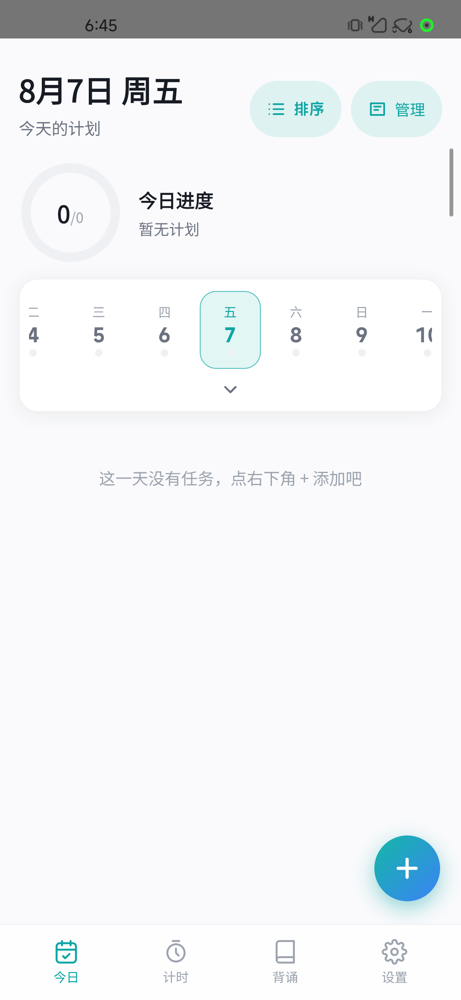
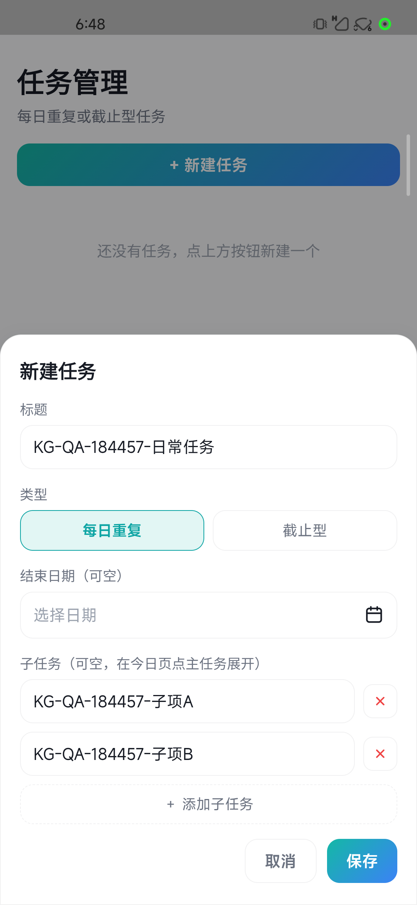
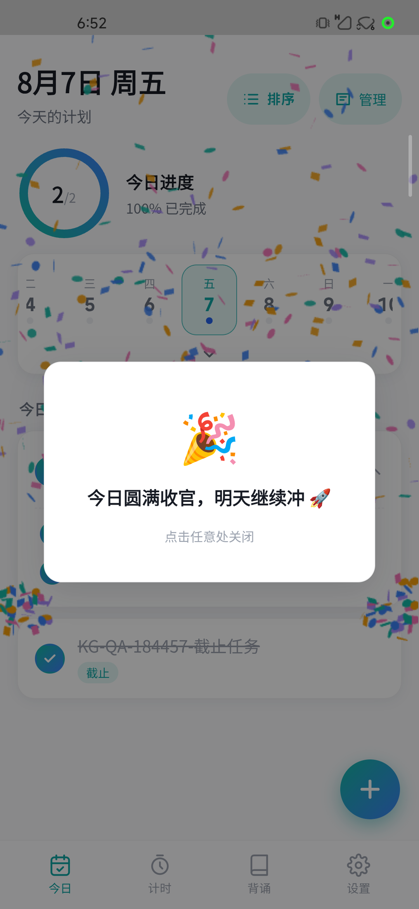
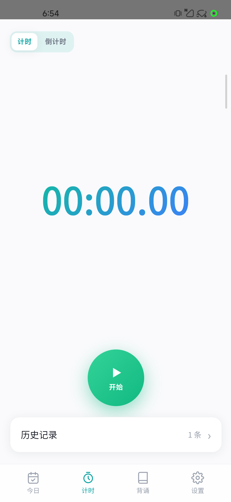
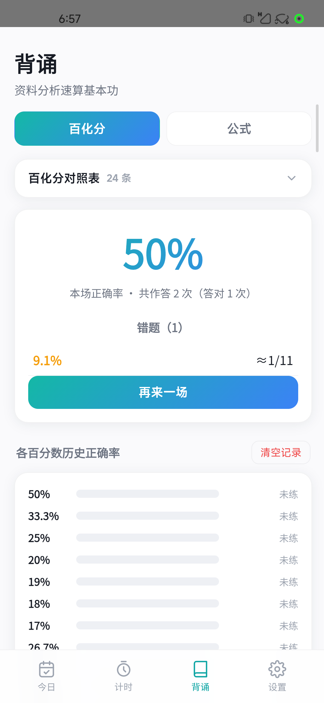
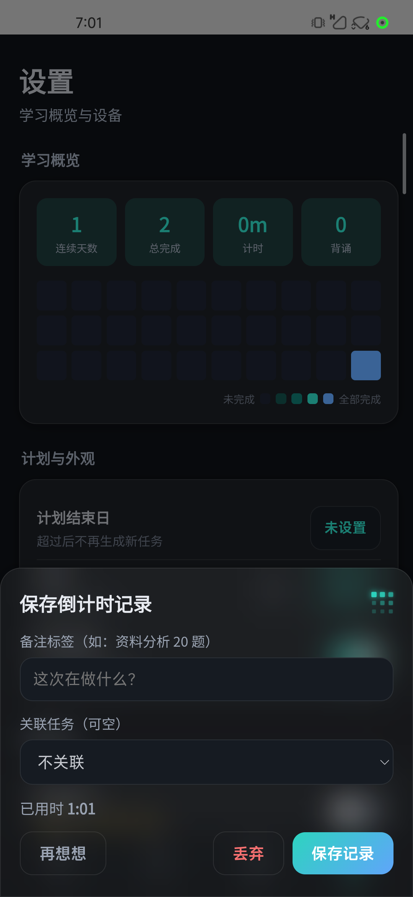

日详情的 Android 返回键直接退出应用
路径：设置 → 学习概览热力图 → 某日详情 → Android 返回键。
实际：应用退到桌面。预期：返回设置页并保留原滚动位置与状态。
发布门槛：修复导航栈后，覆盖系统返回键、页面内返回入口和冷启动恢复的回归。
Android device QA · Run ledger
完整真机运行已结束。核心业务、手动同步、更新下载与生命周期通过；当前保留一项高优先级返回导航失败、一项自动发现阻塞，以及两项体验关注。
20260807T184457+0800
01 · Executive readout
本次运行已完成，但不能判定为完全通过。
从 0.6.0（versionCode 8） 同签名覆盖升级到 0.7.1（versionCode 10） 后，升级前后业务状态摘要一致。任务、日历、打卡、计时、背诵、设置和同步总开关的主要路径均已获得真机结果。
设置页热力图的日详情返回行为破坏 Android 导航预期，应尽快修复并回归。UDP 自动发现仍需定位，但手动地址、配对、补传与服务端回流均正常。更新下载、取消、后台、锁屏、断网恢复和正式 APK 覆盖均已完成。
02 · Run identity
| 运行 ID | 20260807T184457+0800 |
|---|---|
| 开始时间 | |
| 包名 | com.wjy.kaogong |
| 升级路径 | 0.6.0 (8) → 0.7.1 (10) |
| 测试制品 | 可恢复 debug 包 |
| 源提交 | 65a075321e038685a8930bdbee464259ce046191 |
| 正式 APK SHA-256 | 8D853018D8866DAA7123345166C6DE3F079C24AF9B7B09F0A8D8B7DDBB083689 |
| 正式包覆盖 | 通过 · 非 debuggable |
| 设备 | Mi 10 Ultra |
|---|---|
| Android | 13 · API 33 |
| 分辨率 | 1080 × 2340 |
| 密度 | 440 dpi |
| ABI | arm64-v8a |
| 同步初始值 | 关闭 |
| 初始主题 | 浅色 |
03 · Findings
路径：设置 → 学习概览热力图 → 某日详情 → Android 返回键。
实际：应用退到桌面。预期：返回设置页并保留原滚动位置与状态。
发布门槛：修复导航栈后，覆盖系统返回键、页面内返回入口和冷启动恢复的回归。
两次扫描均返回 0 台服务器，其中一次为 6.5 秒完整重扫。相同环境下手动地址、配对、队列补传和服务端变更回流全部正常。
下一步：分别检查广播发送、8322 端口监听、防火墙与网络隔离条件；不要把手动连接成功误判为自动发现通过。
818 × 360 视口：按钮右边界为 825.09，超出约 7.09 CSS px。正文没有横向文案溢出，恢复 392 × 818 竖屏后布局正常。
下一步：按安全区和视口宽度约束悬浮按钮，再覆盖小高度横屏设备回归。
433 帧中 153 帧被 gfxinfo 标记为 janky（35.33%）；P50/P90/P95/P99 为 13/18/19/22 ms，最长区间 26 ms。
没有超过 26 ms 的长帧或 missed-vsync 计数。建议针对 Tab 切换和快速滚动继续做主线程与合成层分析。
04 · Case ledger
状态为运行完成后的结果快照；“关注”表示功能可继续使用，但体验指标没有完全达到目标。
| 状态 | 用例 | 覆盖与结果 | 证据 |
|---|---|---|---|
| 通过 | DATA-001备份基线 | 停止应用后完成私有数据备份、哈希与摘要记录，升级前后状态摘要一致。 | 本地受限证据 |
| 通过 | UPGRADE-001覆盖升级 | 同签名 adb install -r 从 0.6.0 (8) 升级到 0.7.1 (10)，业务基线与偏好保留。 | APP-001 |
| 通过 | APP-001启动 | 冷启动进入今日页，版本升级后主界面可用。 | APP-001 |
| 通过 | NAV-001根导航 | 四个 Tab 点击正常；计时与背诵之间左右滑动可达。 | 运行记录 |
| 通过 | TASK-001任务 | 日常、截止、子任务新增；编辑、归档、恢复、排序与顺序恢复通过。 | TASK-001 |
| 通过 | CAL-001日历 | 月历展开、切换月份、选择日期与回到今天通过。 | 运行记录 |
| 通过 | CHECK-001打卡 | 子任务与主任务完成、取消和 100% 完成反馈通过。 | CHECK-003 |
| 通过 | TIMER-001正计时 | 开始、暂停、继续、打点、保存与关联任务通过；历史、详情、对比和软删除可用。 | TIMER-002 |
| 通过 | TIMER-002倒计时 | 1 秒倒计时完成与丢弃路径通过。 | 运行记录 |
| 通过 | DRILL-001百化分 | 错误、重新入队、正确、50% 总结与清空记录通过。 | DRILL-001 |
| 通过 | DRILL-002公式 | 翻面、没记住、重考、记住、50% 总结与退出确认通过。 | 运行记录 |
| 通过 | SET-001设置 | 深浅主题、启动动画开关、计划结束日设置与清除通过。 | SET-001 |
| 通过 | UPDATE-001GitHub 检查 | 同步关闭时手动检查 GitHub 更新，正确显示最新版本。 | 运行记录 |
| 通过 | SYNC-001关闭同步 | 关闭时本地创建、离线队列持久化；冷启动后开关、任务与队列仍保留。 | 运行记录 |
| 通过 | SYNC-002手动同步 | 手动地址连接、配对、队列补传与服务端全量变更回流通过。 | 运行记录 |
| 通过 | SYNC-003总开关边界 | 关闭时服务端未收到离线任务；重新开启后队列归零，服务端收到新增任务。 | 运行记录 |
| 失败 | BACK-001二级页返回 | 热力图日详情按 Android 返回键后退到桌面，未返回设置页。 | 脱敏文字记录 |
| 阻塞 | DISC-001UDP 发现 | 两次扫描均为 0 台服务器；手动地址和后续同步链路正常。 | 脱敏文字记录 |
| 通过 | UPDATE-002更新下载 | 隔离服务 APK 下载到 100%；不可达下载可取消并清理。恢复原始基线后，正式非调试 APK 覆盖安装成功。 | 脱敏文字记录 |
| 通过 | LIFE-001生命周期 | 断网、后台、锁屏、根页返回和竖屏恢复通过，路由与数据保持。 | 脱敏文字记录 |
| 通过 | LOG-001稳定性日志 | 未发现 FATAL EXCEPTION、SIGABRT/SIGSEGV 或 ANR；完整日志不公开。 | 脱敏文字记录 |
| 关注 | ORIENT-001横屏布局 | 818 × 360 横屏下新增任务按钮右侧超出约 7.09 CSS px；恢复竖屏正常。 | 脱敏文字记录 |
| 关注 | PERF-001渲染性能 | 433 帧中 35.33% janky；P99 22 ms，最长区间 26 ms，无 missed-vsync。 | 脱敏文字记录 |
05 · Public evidence
仅包含空状态或 KG-QA-184457-* 隔离数据。点击图片查看原图。

APP-001升级后首页
TASK-001任务与子任务输入
CHECK-003100% 完成反馈
TIMER-002计时记录保存
DRILL-001百化分训练总结
SET-001深色主题06 · Automated baseline
| 表面 | 结果 | 说明 |
|---|---|---|
| Web | 48 项通过 | 现有 Web 自动化全量通过。 |
| Server | 9 项通过 | 服务端自动化全量通过。 |
| Desktop | 3 项通过 | 桌面端测试与语法检查通过。 |
| Android | 成功 | 单元测试与 Gradle 构建成功。 |
| Web production | 成功 | 生产构建成功。 |
07 · Follow-up
BACK-001修复热力图日详情的系统返回导航，并覆盖页面内返回与冷启动恢复。DISC-001定位 UDP 广播发送、8322 端口监听、防火墙和网络隔离条件。ORIENT-001按安全区和视口宽度约束横屏悬浮按钮。PERF-001分析 Tab 切换和快速滚动中的主线程占用与合成层成本。结果解释：运行已经完成，但存在已知失败和阻塞，因此本报告不等同于“全部通过”。
08 · Privacy boundary
本报告已排除设备标识、网络标识、配对凭据、电脑账户信息、绝对文件位置、真实学习数据和完整日志。设备统一称为 Device A；敏感原始备份与服务数据只保留在本地受限目录。
{kind=link}
{kind=link}
{kind=link}
{kind=link}
{kind=link}
{kind=link}